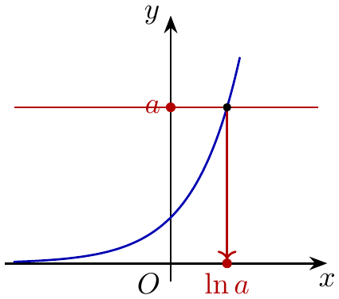
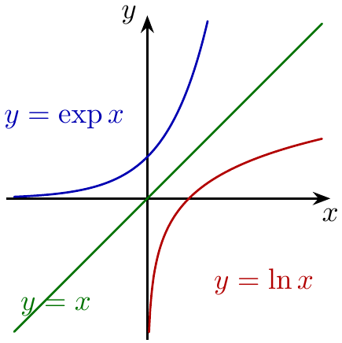
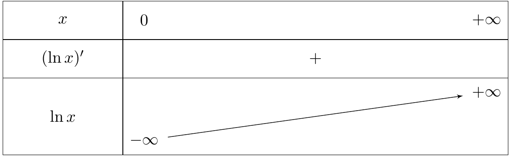
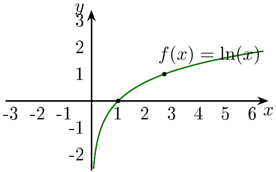
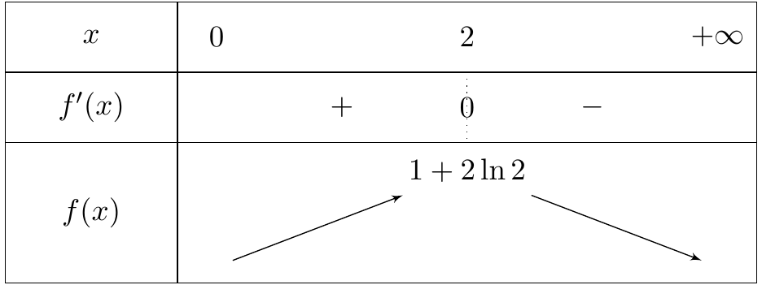
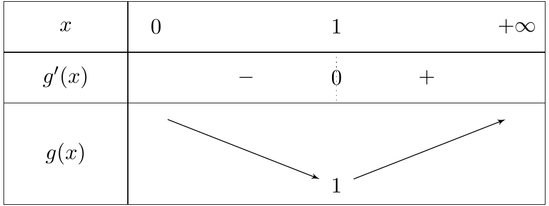

Chapitre 5 : Fonction logarithme népérien
Terminale complémentaire · Chapitre 5 — Logarithme népérien · cours de Frederik de Peyrelongue
I. Définition
Pour tout réel $a$ de $]0\,;+\infty[$, l'équation $\e^{x}=a$ admet une unique solution dans $\R$.
Preuve.
Existence : la fonction $\e^{x}$ est continue et strictement croissante sur $\R$, à valeurs dans $]0\,;+\infty[$ ; donc, pour tout $a>0$, d'après le théorème des valeurs intermédiaires, il existe une solution de $\e^{x}=a$.
Unicité : supposons qu'il existe deux solutions différentes $x$ et $y$ ; on a donc soit $x>y$, et comme $f$ est strictement croissante, $f(x)>f(y)=a$, donc $f(x)>a$, c'est impossible. La solution est donc unique.
On appelle logarithme népérien d'un réel strictement positif $a$ l'unique solution de l'équation $\e^{x}=a$. On la note $\ln a$.
La fonction logarithme népérien, notée $\ln$, est la fonction :

Remarques.
Les fonctions $\exp$ et $\ln$ sont des fonctions réciproques l'une de l'autre.
Les courbes représentatives des fonctions $\exp$ et $\ln$ sont symétriques par rapport à la droite d'équation $y=x$.
Dans le domaine scientifique, on utilise la fonction logarithme décimal, notée $\log$, définie par :

Conséquences :
- Pour $x>0$ : $y=\ln x\iff x=\e^{y}$.
- $\ln 1=0$ ; $\ln e=1$ ; $\ln\dfrac{1}{e}=-1$.
- $\ln \e^{x}=x$.
- Pour $x>0$ : $\e^{\ln x}=x$.
II. Propriétés de la fonction logarithme népérien
Relation fonctionnelle
Pour tous réels $a$ et $b$ strictement positifs, on a :
Donc
Remarque. Cette formule permet de transformer un produit en somme.
Ainsi, celui qui aurait à effectuer $36\times 62$ appliquerait cette formule, soit :
(voir table ci-dessous).
L'addition étant beaucoup plus simple à effectuer que la multiplication, on trouve facilement :
En cherchant dans la table le logarithme égal à $3{,}3487$, on trouve $2232$, soit :
| $x$ | $\log(x)$ |
| $1$ | $0$ |
| $2$ | $0{,}3010$ |
| $3$ | $0{,}4771$ |
| $\dots$ | |
| $34$ | $1{,}5315$ |
| $35$ | $1{,}5441$ |
| $\dots$ | |
| $62$ | $1{,}7924$ |
| $\dots$ | |
| $2231$ | $3{,}3485$ |
| $2232$ | $3{,}3487$ |
| $\dots$ |
Conséquences
Pour tous réels $a$ et $b$ strictement positifs, on a :
- $\ln\dfrac{1}{a}=-\ln a$ ;
- $\ln\dfrac{a}{b}=\ln a-\ln b$ ;
- $\ln\sqrt{a}=\dfrac{1}{2}\ln a$ ;
- $\ln a^{n}=n\ln a$ avec $n$ entier relatif ;
- $\ln a^{x}=x\ln a$ avec $x$ réel.
Correction.
Équations et inéquations
Pour tous réels $a$ et $b$ strictement positifs, on a :
- $\ln a=\ln b\iff a=b$ ;
- $\ln a<\ln b\iff a<b$.
- $\ln x=7$, \ $I=]0\,;+\infty[$
- $\e^{x+5}=10$, \ $I=\R$
- $3\ln x-4=8$, \ $I=]0\,;+\infty[$
- $\ln(6x-1)\geqslant 2$, \ $I=\left[\frac{1}{6}\,;+\infty\right[$
- $\e^{x}+5>4\,\e^{x}$, \ $I=\R$
Correction.
a) $\ln x=7\iff \ln x=\ln \e^{7}\iff x=\e^{7}$. L'ensemble solution est donc $S=\{\e^{7}\}$.
b) $\e^{x+5}=10\iff \e^{x+5}=\e^{\ln 10}\iff x+5=\ln 10$.
L'ensemble solution est donc $S=\{\ln 10-5\}$.
c) $3\ln x-4=8\iff 3\ln x=12\iff \ln x=4$ $\iff \ln x=\ln \e^{4}\iff x=\e^{4}$. L'ensemble solution est donc $S=\{\e^{4}\}$.
d) $\ln(6x-1)\geqslant 2\iff \ln(6x-1)\geqslant \ln \e^{2}$ $\iff 6x-1\geqslant \e^{2}\iff 6x\geqslant \e^{2}+1$
L'ensemble solution est donc $\left[\dfrac{\e^{2}+1}{6}\,;+\infty\right[$.
e) $\e^{x}+5>4\e^{x}\iff \e^{x}-4\e^{x}>-5\iff -3\e^{x}>-5$ $\iff \e^{x}<\dfrac{-5}{-3}$ (inverse le sens) $\iff \e^{x}<\dfrac{5}{3}\iff \e^{x}<\e^{\ln\frac{5}{3}}$ $\iff x<\ln\dfrac{5}{3}$.
L'ensemble solution est donc $S=\left]-\infty\,;\ln\dfrac{5}{3}\right[$.
III. Étude de la fonction logarithme népérien
Dérivabilité
La fonction logarithme népérien est dérivable sur $\left]0\,;+\infty\right[$ et
Dériver la fonction suivante sur l'intervalle $\left]0\,;+\infty\right[$ : $f(x)=\dfrac{\ln x}{x}$.
Variations
La fonction logarithme népérien est strictement croissante sur $\left]0\,;+\infty\right[$.
$(\ln x)'=\dfrac{1}{x}>0$.
On dresse le tableau de variations de la fonction logarithme népérien :

Limites aux bornes
Courbe représentative
Valeurs particulières :

IV. Études de fonctions contenant des logarithmes
Étudier les variations d'une fonction
Déterminer les variations de la fonction $f$ définie sur $\left]0\,;+\infty\right[$ par
Sur $\left]0\,;+\infty\right[$, on a :
Comme $x>0$, $f'(x)$ est du signe de $2-x$.
La fonction $f$ est donc strictement croissante sur $]0\,;2]$ et strictement décroissante sur $[2\,;+\infty[$.
On dresse le tableau de variations :

Étudier la position relative de la courbe de la fonction logarithme et de la droite d'équation $y=x$
Étudier la position relative de la courbe de la fonction logarithme et de la droite d'équation $y=x$.
On considère la fonction $g$ définie sur $\left]0\,;+\infty\right[$ par
Comme $x>0$, $g'(x)$ est du signe de $x-1$.
On a également :
On dresse ainsi le tableau de variations :

On en déduit que, pour tout $x$ de $\left]0\,;+\infty\right[$, on a $g(x)=x-\ln x\geqslant 1>0$, soit $x>\ln x$.
V. Fonctions composées de la forme $\ln u$
Dérivée de $\ln u$
Soit $u$ une fonction dérivable et strictement positive ($u>0$) sur un intervalle $I$ de $\R$.
La fonction $f:x\longmapsto \ln(u(x))$ est dérivable sur $I$ et on a
Si $f(x)=\ln(x^{2}+1)$, $f$ est de la forme $f(x)=\ln\bigl(u(x)\bigr)$ avec $u(x)=x^{2}+1$.
Pour calculer $f'(x)$, je calcule $u'$ : $u'(x)=2x$.
Et on trouve
Primitive des fonctions de la forme $u'/u$
Soit $u$ une fonction dérivable et strictement positive ($u>0$) sur un intervalle $I$ de $\R$.
Les primitives de la fonction $g:x\longmapsto \dfrac{u'(x)}{u(x)}$ sont les fonctions
Preuve : je dérive $G$ : $G'(x)=\dfrac{u'(x)}{u(x)}=g(x)$.
Soit $f(x)=\dfrac{4x^{3}}{x^{4}+5}$ : je remarque que le numérateur est la dérivée du dénominateur, donc $f$ est de la forme $u'/u$ avec $u(x)=x^{4}+5$ et
Les primitives de $f$ sont les fonctions
Et
VI. La fonction logarithme décimal
Définition et propriétés algébriques
On appelle fonction logarithme décimal la fonction, notée $\log$, définie sur $\left]0\,;+\infty\right[$ par :
D'où
Pour $a>0$ et $b>0$ :
$10^{x}$ est la fonction réciproque de $\log(x)$.